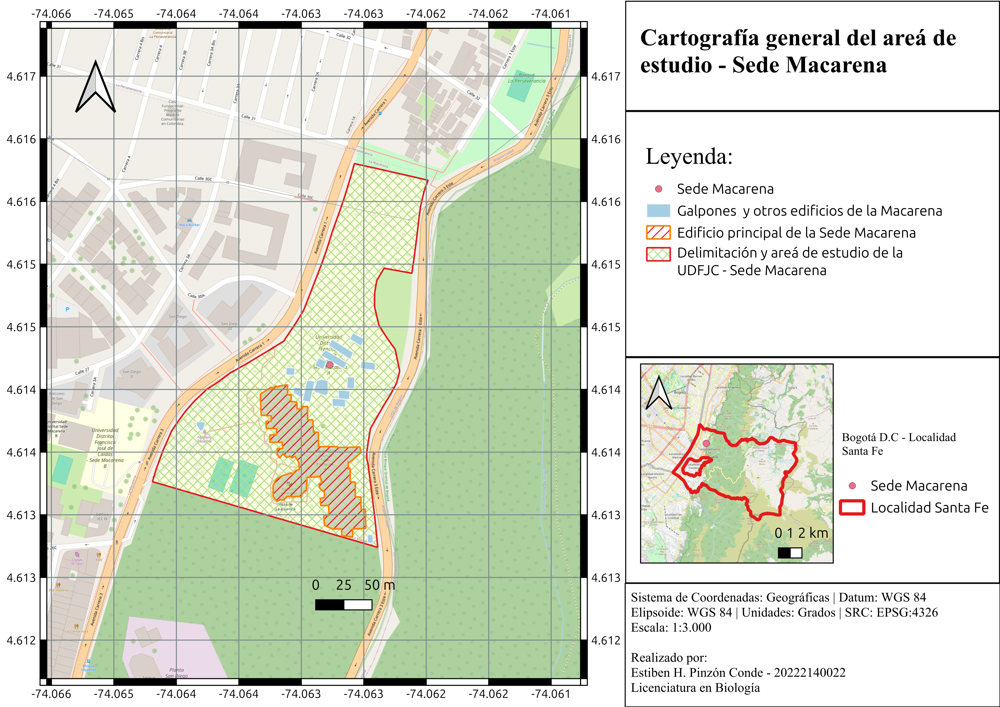

Catálogo de macrohongos de La Macarena y Vivero de la Universidad Distrital Francisco José de Caldas
El bosque de La Macarena y Vivero de la Universidad Distrital Francisco José de Caldas es un área verde representativa de las sedes respectivas, donde se pueden encontrar una variedad de especies de macrohongos. Este catálogo tiene como objetivo documentar y dar a conocer las diferentes especies de hongos que habitan en esta región, proporcionando información sobre su taxonomía, características morfológicas y fotografías representativas.

fotografía tomada por Estiben Pinzón
Bosque de La Macarena
El bosque de La Macarena o simplemente el bosque es una zona verde que fue tomada como área verde en la Universidad Distrital Francisco José de Caldas, donde se pueden encontrar una variedad de especies de árboles y arbustos además de cultivos, dentro de las especies de árboles más representativas se encuentra Quercus humboldtii y el saúco, específicamente esta zona verde en funga (Macrohongos) va a estar caracterizada por especies micorrízicas.

fotografía tomada por Estiben Pinzón
Bosque de Vivero
El bosque de Vivero es una zona verde que fue tomada como área verde en la Universidad Distrital Francisco José de Caldas, donde se pueden encontrar una variedad de especies de árboles y arbustos además de cultivos, dentro de las especies de árboles más representativas se encuentra Quercus humboldtii y el saúco, específicamente esta zona verde en funga (Macrohongos) va a estar caracterizada por especies micorrízicas.